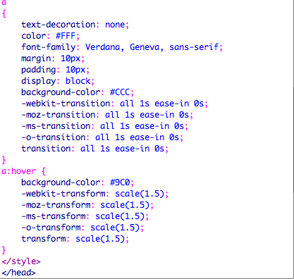
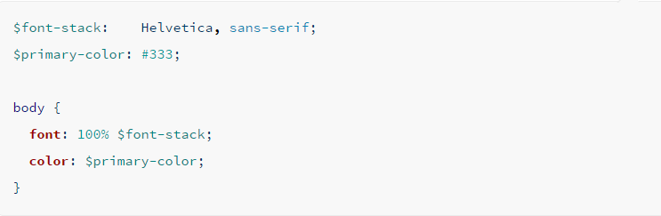
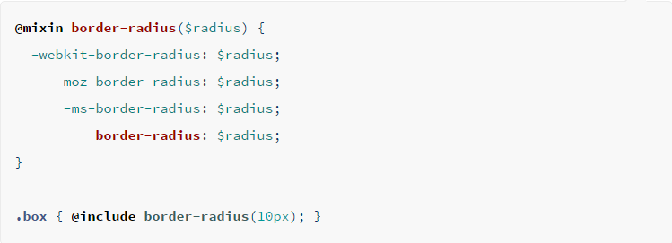
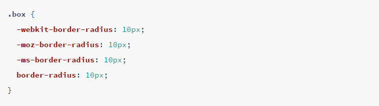
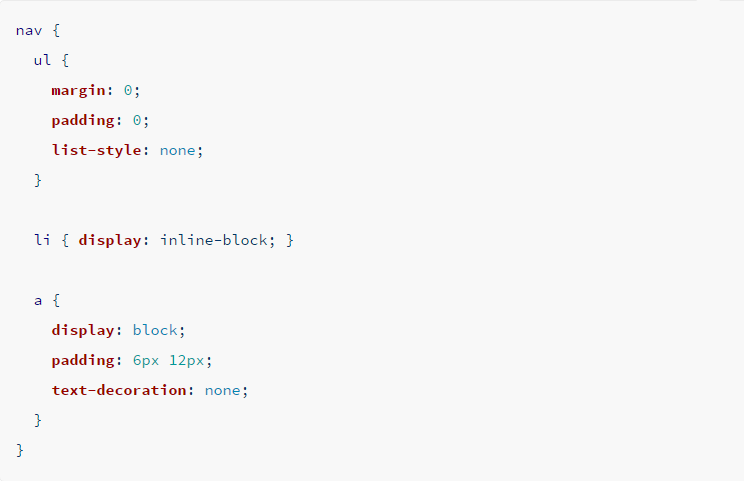

Sass
Design Websites Effectively
Slides:
juandavidherrera.com/sass/slides
Follow me on:
Medium
GitHub
Juan Herrera

Juan Herrera
 The RAK Project
The RAK Projectwww.rak.juandavidherrera.com
Juan Herrera
 Kindd: Despierta tu humanidad
Kindd: Despierta tu humanidadwww.kindd.org


Who knows CSS?

CSS
“ Cascading Style Sheets (CSS) is a simple mechanism for adding style (e.g., fonts, colors, spacing) to Web documents.” W3C
Why is it important?
CSS files analogy





SASS
Syntactically Awesome Style Sheets“Sass is the most mature, stable, and powerful professional grade CSS extension language in the world..”
Variables!
Compiles to:

Data types:

Mixins!
Compiles to:
Inheritance!

Nesting!
Compiles to:

COMPASS
“ Compass is a Sass framework.” stackoverflow
“ Compass is a collection of helpful tools and battle-tested best practices for Sass.” stackoverflow
COMPASS
div {
@include border-radius(25px);
}
Compila a:
div {
-moz-border-radius: 25px;
-webkit-border-radius: 25px;
border-radius: 25px;
}